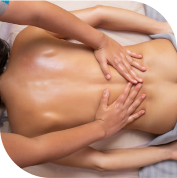

Професійний масаж з виїздом додому
Подзвонити-

-
Мене звуть Рудзевич Артем.
Я професійний масажист з багаторічним досвідом. Працював фітнес-тренером в клубі Спорт Лайф з 2018 р., та два роки менеджером тренажерної зали, до моїх обов'язків входило, набір та навчання тренерів, за ці два роки я відвідав безліч навчальних семінарів та курсів з підвищення кваліфікації, що допомогло мені стати доволі досвідченим фахівцем в галузі оздоровчих практик. Паралельно закінчив декілька курсів масажистів і розпочав практику зі своїми клієнтами і це допомогло багатьом людям досягти максимально комфортного рівня життя. На разі закінчив кар'єру тренера та працюю масажистом.
Послуги
-

-
Класичний лікувально-оздоровчий масаж
Масаж який підходить для людей страждаючих хронічними болями у м'язах та суглобах, він не дуже приємний інколи навіть болючий але це спочатку, як тільки людина проходить два - три сеанси біль майже зникає та настає відчуття полегшення, вільність руху, покращується сон та працездатність
-
Класичний розслабляючий масаж
Масаж підходить для людей які навантажені більш психологічно ніж фізично, та не в змозі самостійно розслаблятися, постійно перебувають у стресі, такий масаж більше впливає на нервову систему ніж на м'язи, покращується загальне самопочуття, сон та стресостійкість
- 
-

-
Класичний лімфодренажний масаж
Масаж який здебільшого призначають лікарі при певних проблемах з лімфо та кровообігом, може проводитися по всіх ділянках тіла або здебільшого на основних м'язових групах, таких як ноги та спина. Кількість сеансів також визначається лікарем але можна робити і без призначення та тільки значного ефекту можливо і не відчути
-
Постізометрична релаксація
Унікальний комплекс вправ який як і лікувально-оздоровчий масаж націлений на глибоку роботу з м'язами, відмінність його лише в тому що масаж при цьому не робиться, лише розтягування м'язів що дуже сильно знижуе неприємні або больові відчуття, можна робити як окремо так і в комплексі з лікувальним масажем.
-


Ціни
Ціна та тривалість сеансу залежить від декількох факторів: Здебільшого тривалість сеансу 40-60 хв. але якщо я бачу що ще треба трохи часу щоб правильно завершити сеанс то я можу і затриматись, з мого досвіду не коректно завершувати сенс за годинником, буває таке що перші два сеанси можуть бути по 90 хв. та ще чотири по 40 і цього достатньо щоб завершити курс, головне не скільки, а як) Ціна за сеанс фіксована та становить 600 грн це з урахуванням дороги але тільки Деснянський район. В інші райони міста ціна буде іншою та обговорюється окремо, також діють сімейні знижки, 2 людини 1000 грн за двох та 3 людини 1300 грн за трьох відповідно.
Подзвонити